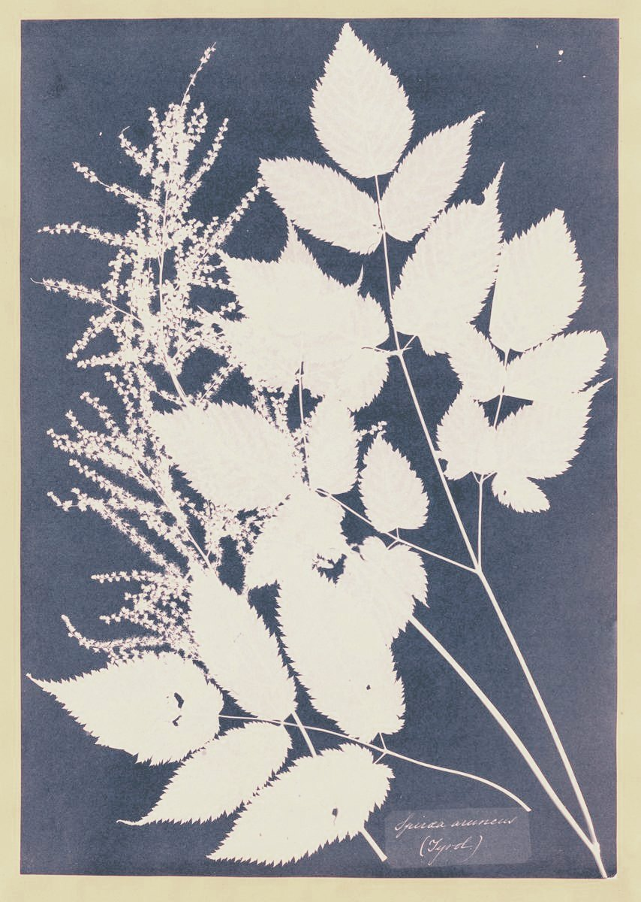

- Главная
- База знаний
База знаний и практик
Что со мной происходит, что можно сделать своими силами и к кому идти. Четыре раздела, один поиск.

С чем ты сейчас
На странице ситуации собрано всё из четырёх разделов: что почитать, что сделать сегодня и кто помогает.
- Закончилась работа или своё дело, и уже несколько месяцев «надо что-то решать».
- Переезд: профессия, которая дома работала, здесь не складывается.
- Кризис идентичности: кто я, что я, в чём смыслы.
- Много лет в одном деле, и силы кончились. Обратно не хочется, а что вместо — непонятно.
- Есть две-три дороги в деле, в призвании, в будущем — и уже давно не получается выбрать.
- Планы были, но каждый раз срывались на одном и том же месте.
- Всё в целом хорошо, но что-то чувствуется, что происходящее — не моё, и страшно шагнуть на новый путь.
- Не знаю, к какому специалисту с этим идти: психолог, коуч, карьерный консультант?
- Рядом человек в кризисе или переходе, и я не знаю, как помочь.
- Хочется спокойно подвести год, отрефлексировать этап и выбрать, куда дальше.
- Тревога не отпускает
- Потеря близкого человека
Четыре раздела
- ПрактикиУпражнения, которые можно сделать своими силамиоткрыто
- Энциклопедия переходовЧто происходит, как это называется, какие подходы помогают и насколько они исследованыв работе
- Атлас помогающих профессийКто чем помогает, с чем к кому идти и с кем их путаютв работе
- РесурсыКниги, тесты, подкасты и сервисыв работе
Метка говорит, насколько исследован подход, на котором стоит практика или статья.
- сильная
- умеренная
- ранняя
- спорная
- опыт практиков